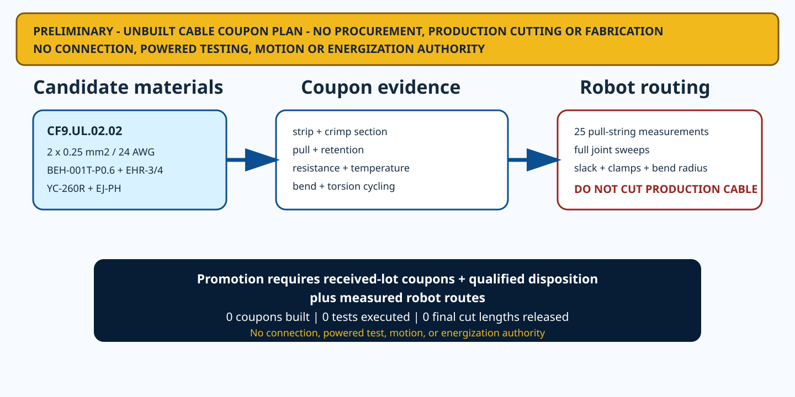

4
candidate tooling paths and operations
HR-30 whole-body P0.1
The candidate parts and tools are now explicit. Their exact combination is not qualified, so the package defines the evidence needed to earn a production process.
candidate tooling paths and operations
controlled coupon specimen families
axis routes requiring as-built measurement
built coupons, executed tests, or released cut lengths

Loose-piece trial: JST BEH-001T-P0.6 contact, YC-260R hand tool, EHR-3/EHR-4 housings and EJ-PH extraction tool. The alternative strip path is SEH-001T-P0.6 + YRS-260. These are manufacturer-linked candidates—not a released process for CF9's TPE construction.
The existing geometry values are planning lengths, not cable cut lengths. Each axis must be measured on the assembled robot with pull string through its complete joint range. Connector termination allowance, service slack, clamps, bend radius and collision clearance must then be frozen.
| Axis | Geometry planning length | Commanded range | Final cut length | Action |
|---|---|---|---|---|
| WAIST_YAW | 74.615 mm | speed <=15 deg/s in HR-30A | SELECTION REQUIRED - MEASURE ON ASSEMBLED ROBOT | DO NOT CUT PRODUCTION CABLE |
| HEAD_PAN | 74.325 mm | SELECTION REQUIRED | SELECTION REQUIRED - MEASURE ON ASSEMBLED ROBOT | DO NOT CUT PRODUCTION CABLE |
| HEAD_TILT | 113.709 mm | SELECTION REQUIRED | SELECTION REQUIRED - MEASURE ON ASSEMBLED ROBOT | DO NOT CUT PRODUCTION CABLE |
| L_SHOULDER_PITCH | 114.724 mm | SELECTION REQUIRED | SELECTION REQUIRED - MEASURE ON ASSEMBLED ROBOT | DO NOT CUT PRODUCTION CABLE |
| L_SHOULDER_ROLL | 114.724 mm | SELECTION REQUIRED | SELECTION REQUIRED - MEASURE ON ASSEMBLED ROBOT | DO NOT CUT PRODUCTION CABLE |
| L_ELBOW_PITCH | 144.750 mm | SELECTION REQUIRED | SELECTION REQUIRED - MEASURE ON ASSEMBLED ROBOT | DO NOT CUT PRODUCTION CABLE |
| L_WRIST_ROTATION | 267.381 mm | SELECTION REQUIRED | SELECTION REQUIRED - MEASURE ON ASSEMBLED ROBOT | DO NOT CUT PRODUCTION CABLE |
| L_GRIPPER | 307.725 mm | SELECTION REQUIRED | SELECTION REQUIRED - MEASURE ON ASSEMBLED ROBOT | DO NOT CUT PRODUCTION CABLE |
| L_HIP_YAW | 145.546 mm | +/-30 deg | SELECTION REQUIRED - MEASURE ON ASSEMBLED ROBOT | DO NOT CUT PRODUCTION CABLE |
| L_HIP_ROLL | 125.862 mm | +/-25 deg | SELECTION REQUIRED - MEASURE ON ASSEMBLED ROBOT | DO NOT CUT PRODUCTION CABLE |
| L_HIP_PITCH | 106.339 mm | -35..+45 deg | SELECTION REQUIRED - MEASURE ON ASSEMBLED ROBOT | DO NOT CUT PRODUCTION CABLE |
| L_KNEE_PITCH | 114.122 mm | 0..120 deg | SELECTION REQUIRED - MEASURE ON ASSEMBLED ROBOT | DO NOT CUT PRODUCTION CABLE |
| L_ANKLE_PITCH | 267.754 mm | -35..+30 deg | SELECTION REQUIRED - MEASURE ON ASSEMBLED ROBOT | DO NOT CUT PRODUCTION CABLE |
| L_ANKLE_ROLL | 287.696 mm | +/-20 deg | SELECTION REQUIRED - MEASURE ON ASSEMBLED ROBOT | DO NOT CUT PRODUCTION CABLE |
| R_SHOULDER_PITCH | 114.724 mm | SELECTION REQUIRED | SELECTION REQUIRED - MEASURE ON ASSEMBLED ROBOT | DO NOT CUT PRODUCTION CABLE |
| R_SHOULDER_ROLL | 114.724 mm | SELECTION REQUIRED | SELECTION REQUIRED - MEASURE ON ASSEMBLED ROBOT | DO NOT CUT PRODUCTION CABLE |
| R_ELBOW_PITCH | 144.750 mm | SELECTION REQUIRED | SELECTION REQUIRED - MEASURE ON ASSEMBLED ROBOT | DO NOT CUT PRODUCTION CABLE |
| R_WRIST_ROTATION | 267.381 mm | SELECTION REQUIRED | SELECTION REQUIRED - MEASURE ON ASSEMBLED ROBOT | DO NOT CUT PRODUCTION CABLE |
| R_GRIPPER | 307.725 mm | SELECTION REQUIRED | SELECTION REQUIRED - MEASURE ON ASSEMBLED ROBOT | DO NOT CUT PRODUCTION CABLE |
| R_HIP_YAW | 145.546 mm | +/-30 deg | SELECTION REQUIRED - MEASURE ON ASSEMBLED ROBOT | DO NOT CUT PRODUCTION CABLE |
| R_HIP_ROLL | 125.862 mm | +/-25 deg | SELECTION REQUIRED - MEASURE ON ASSEMBLED ROBOT | DO NOT CUT PRODUCTION CABLE |
| R_HIP_PITCH | 106.339 mm | -35..+45 deg | SELECTION REQUIRED - MEASURE ON ASSEMBLED ROBOT | DO NOT CUT PRODUCTION CABLE |
| R_KNEE_PITCH | 114.122 mm | 0..120 deg | SELECTION REQUIRED - MEASURE ON ASSEMBLED ROBOT | DO NOT CUT PRODUCTION CABLE |
| R_ANKLE_PITCH | 267.754 mm | -35..+30 deg | SELECTION REQUIRED - MEASURE ON ASSEMBLED ROBOT | DO NOT CUT PRODUCTION CABLE |
| R_ANKLE_ROLL | 287.696 mm | +/-20 deg | SELECTION REQUIRED - MEASURE ON ASSEMBLED ROBOT | DO NOT CUT PRODUCTION CABLE |
Tooling | Coupon BOM | Specimens | Build traveler | Measurements | 25 route measurements | Open holds | Primary sources
No acceptance limit has been invented. Unresolved values are explicitly SELECTION REQUIRED.